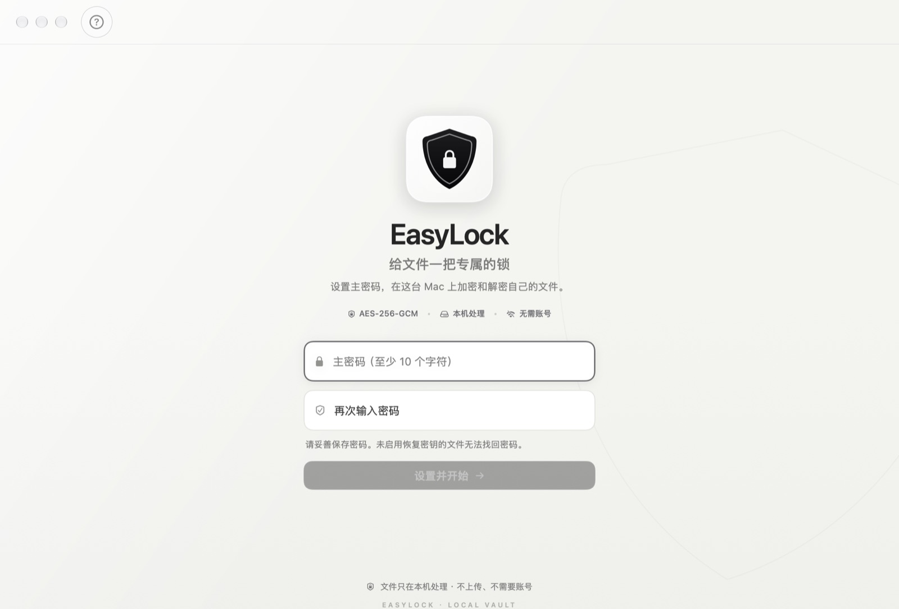
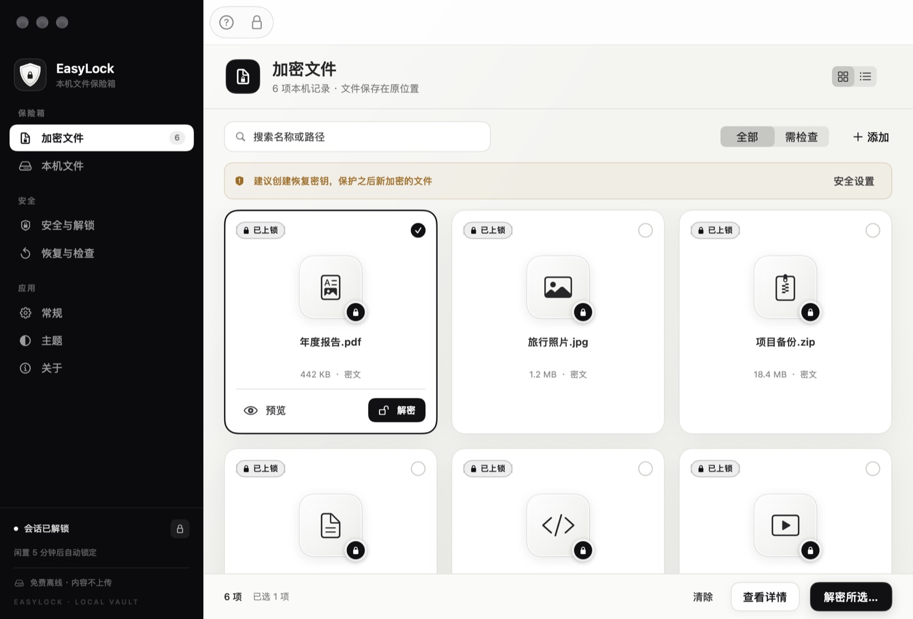
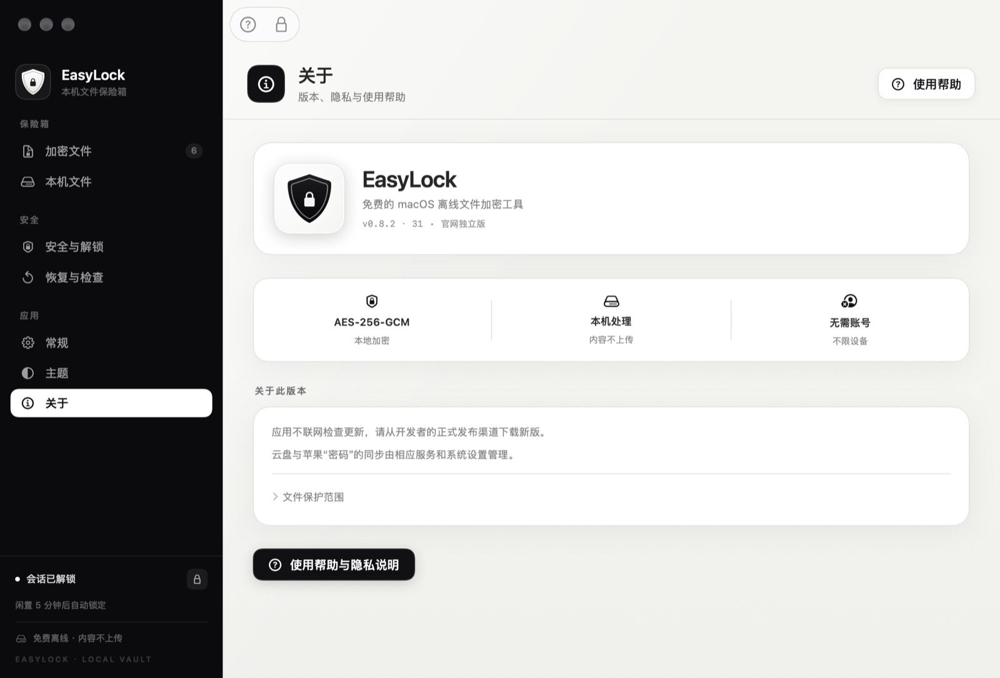
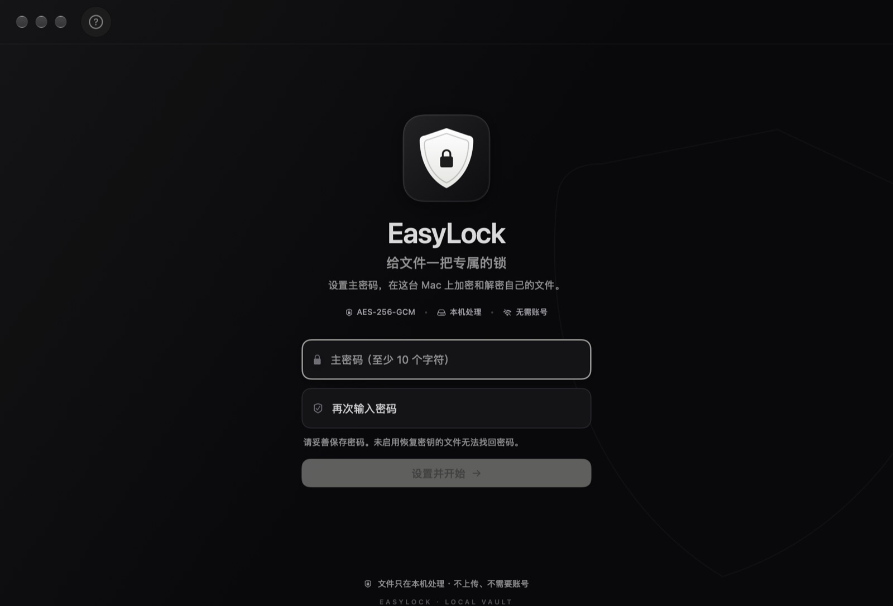
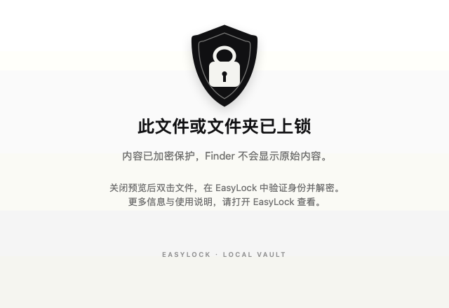
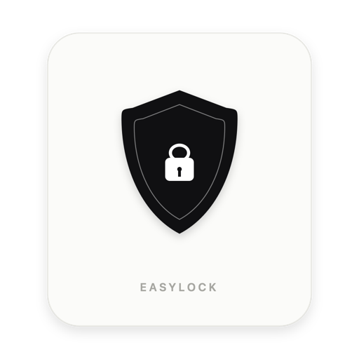

原地加密
文件留在原来的位置，名称后追加 .easylock。支持多选与拖放，确认后直接在本机完成替换和校验。
.EASYLOCK拖放 / 多选
FREE · OFFLINE · MACOS 14+
EasyLock 在本机把文件和文件夹加密为 .easylock。没有账号、激活或云上传，解密凭据只属于你。

当前为开发预览版。 GitHub Releases 提供的是 0.8.2 Preview 2 · 构建 31，使用开发签名，尚未完成公证和独立安全审查。新的黑白界面已合并到 main 分支；下一次测试包更新前，下载版界面可能不同。请仅使用有独立备份的测试资料。
WHY EASYLOCK
加密、预览和恢复都在本机完成。界面换成更安静的黑白设计，操作路径仍然直接。
文件留在原来的位置，名称后追加 .easylock。支持多选与拖放，确认后直接在本机完成替换和校验。
用文件密码、恢复密钥或 Touch ID 验证后临时查看。关闭或锁定应用时清理应用临时副本，原密文不被修改。
没有账号、激活、广告和遥测，也没有内置联网更新。应用只在你授权的目录里读写你的文件。
HOW IT WORKS
不需要搬动文件，也不需要注册。每一步都留在你的 Mac 上。
拖入文件或文件夹，确认加密。原件通过校验后才会被替换，原位置只留下密文。
双击密文或拖回应用，用密码、恢复密钥或 Touch ID 验证；也可以先解密到其他位置保留密文。
建议启用恢复密钥并单独保存。更改主密码不会为旧文件换密码，开发者也无法找回遗失的凭据。
加密不会清除历史缓存、备份、快照或其他明文副本。操作前请保留独立备份，并关闭正在编辑这些文件的程序。
THE NEW INTERFACE
新界面从应用图标出发：黑白盾牌、同心描边、克制的留白。颜色只留给需要你注意的警告。



截图来自 main 分支的新界面，使用演示数据。GitHub Releases 中的当前测试包可能仍是旧界面，下载前请注意版本说明。
SYSTEM INTEGRATION
锁定缩略图、Quick Look 预览和桌面小组件沿用同一套黑白语言。它们只显示锁定状态和数量，不读取明文。
Finder 预览和缩略图只检查密文标识并显示固定提示，不解密文件内容。桌面小组件默认隐藏记录数量，不共享文件名、路径或密码。


FINDER THUMBNAIL